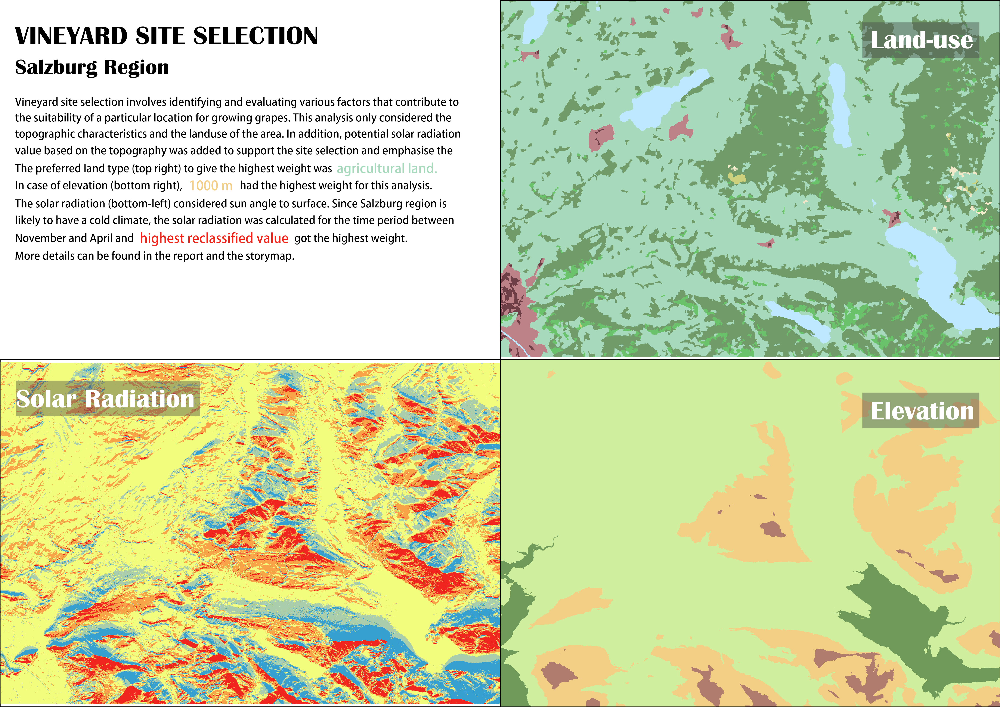

Vineyard site selection based on topographic characteristics, landuse, and sun radiation in Salzburg region.
Weighted Overlay
Weighted Overlay follows considering the goal of the project, wrapping up meaningful factors required to estimate the final result, which would be areas following up the value and the weight of each factor. The weighted overlay table allows the calculation of a multiple-criteria analysis between several raster datasets. Different spatial datasets could be considered related to the goal of the project including, Land Cover, Infrastructure, Distance buffers, Terrain Characteristics, Soil characteristic, Climate Consideration and so on. What would challenge the result of the overlay could be named as availability of data, quality of data, the spatial resolution, up-to-date data and so on.
When selecting a site for a vineyard, several factors come into play, including slope, aspect, elevation, land use, and sun radiation. The slope of the land is essential for water drainage and preventing soil erosion, with a recommended gradient of 5-20% to strike a balance. Aspect refers to the direction a slope faces, influencing sun exposure, temperature, and air drainage. South-facing slopes receive more direct sunlight, aiding grape ripening, while north-facing slopes provide cooler temperatures. Elevation affects temperature variations and influences the grape-growing season. Land use history is important to assess potential soil quality and any previous chemical usage. Lastly, understanding sun radiation patterns helps determine the intensity and duration of sunlight received, crucial for grape photosynthesis and ripening.
{kind=link}
Vineyard site selection is a comprehensive process that encompasses numerous factors beyond slope, aspect, elevation, land use, and sun radiation. These additional considerations play a vital role in the sustainability of a vineyard. Soil composition is of utmost importance, as it affects water drainage, nutrient availability, and root development, ultimately influencing the health of grapevines. Climate, including temperature, rainfall, and humidity are another critical factors that determine the suitability of a site for grape cultivation. Water availability, either through natural sources or irrigation infrastructure, is essential for vineyard irrigation and the overall sustainability of the operation. Proximity to markets, transportation networks, and winemaking facilities is crucial for logistical efficiency and timely delivery of grapes and wine.
 Vineyard final preferred areas, however more variables need to be considered.
Vineyard final preferred areas, however more variables need to be considered.